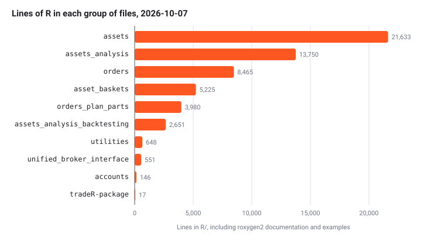

The repository is an R package with its documentation, its tests and
the notes that explain it. All package code lives in the one flat
R/ directory, as R requires, so the Python library’s
package path becomes a file name prefix joined with underscores:
src/tradingmachine/assets/equities.py became
R/assets_equities.R. The package is used either installed,
with devtools::install(), or loaded straight from the
repository while working on it, with
devtools::load_all().
The tree
The annotated tree below shows every directory and the files that matter. The 54 synthetic order files, the 52 plan part files, the 14 analysis files and the 110 test files are summarised rather than listed one by one.
tradeR/
├── DESCRIPTION the package's metadata, its 6 imported packages, the 2 suggested ones and R >= 4.3
├── NAMESPACE the exported names, generated by devtools::document() and committed
├── LICENSE, LICENSE.md the MIT licence, short form for R and full text for GitHub
├── README.md the home page of this site
├── _pkgdown.yml this site's configuration: url, theme, Mermaid, navbar and reference sections
├── .Rbuildignore keeps .claude, .env, docs, _pkgdown.yml, .github and vignettes/articles out of the built package
├── .gitignore keeps .env, docs/ and R's working files out of git
├── .github/workflows/pkgdown.yaml builds this site on every push to main and publishes it to the gh-pages branch
├── .claude/
│ ├── CLAUDE.md a dense description of the port for AI assistants, kept out of the site root
│ └── notes/ one sidecar note per file, mirroring the tree, holding the reasoning
├── man/ 201 .Rd help pages, generated from roxygen2 comments and committed
├── vignettes/articles/ these guides as R Markdown, and their diagrams in diagrams/
├── tests/
│ ├── testthat.R runs the suite with test_check("tradeR")
│ └── testthat/
│ ├── helper-*.R 5 helpers: a fake client, fake instrument details, a fake MongoDB collection and candles
│ ├── fixtures/ 4 CSV files of candles and of the Python library's signals to compare against
│ └── test-*.R 110 test files, each named after the file in R/ it tests
└── R/
├── tradeR-package.R the package help page and the imports from the six packages
├── accounts_account.R Account, whose flatten is UBI's account-wide kill switch
├── asset_baskets_asset_basket.R AssetBasket, the shared base, which inherits the 14 analysis classes
├── asset_baskets_basket_member.R BasketMember, one instrument with a weight, a quantity, or neither
├── asset_baskets_portfolio.R Portfolio, which can place and rebalance orders
├── asset_baskets_watchlist.R Watchlist
├── asset_baskets_index.R Index, the constituents of an index
├── asset_baskets_exchange_traded_fund_constituents.R
├── asset_baskets_mutual_fund_constituents.R
├── asset_baskets_basket_store.R BasketStore, the asset_baskets collection in MongoDB
├── asset_baskets_basket_csv_importer.R BasketCsvImporter, which fills the store from a CSV file
├── asset_baskets_member_resolver.R MemberResolver, which builds every member in one request
├── asset_baskets_exceptions.R AssetBasketError and its 3 subclasses
├── assets_instruments.R Instrument, TradeableInstrument, NonTradeableInstrument,
│ Derivative, Futures, Option, IndexFutures, IndexOption, InstrumentCatalogue
├── assets_option_pricing.R OptionPricingModel, BlackScholes and Black76
├── assets_equities.R 6 equity-family classes
├── assets_fixed_income.R 6 fixed income classes
├── assets_commodities.R 6 commodity classes
├── assets_currencies.R 6 currency classes
├── assets_funds.R ExchangeTradedFund, InvestmentTrust
├── assets_mutual_funds.R MutualFund
├── assets_exceptions.R InstrumentError and its 37 subclasses
├── assets_analysis_price_analysis.R PriceAnalysis, the shared base
├── assets_analysis_*.R 14 files, one analysis class each, inherited by Instrument and AssetBasket
├── assets_analysis_backtesting_*.R 8 files, the backtesting engine StrategyBacktests runs on
├── orders_synthetic_order.R SyntheticOrder, the shared base
├── orders_order_candidate.R OrderCandidate, one leg of a multi-instrument order
├── orders_exposure_watch.R ExposureWatch, one watched instrument of an exposure hedge
├── orders_plan.R PlanOrder, an order described as a plan of parts
├── orders_plan_parts_*.R 52 files, one plan part each
├── orders_*.R 54 files, one synthetic order type each, such as orders_bracket.R
├── unified_broker_interface_client.R UnifiedBrokerInterface, the only code that speaks HTTP
├── unified_broker_interface_exceptions.R one error class per HTTP status UBI returns
├── utilities_configuration.R Configuration, which reads the environment and .env lazily
├── utilities_error_catalogue.R ErrorCatalogue, which builds conditions with the Python class names
├── utilities_frame_builder.R FrameBuilder, which turns UBI's rows into data frames
└── utilities_time_converter.R TimeConverter, which turns UBI's dates and times into Date and POSIXctdocs/, the built site, and .env are also
present on a working machine, and .gitignore keeps both of
them out of git. inst/ exists but is empty. The project
instructions live in .claude/CLAUDE.md rather than at the
root, because pkgdown publishes every Markdown file at the repository
root as a page of the site.
File counts
The table below counts the R files and lines in each group of files
under R/, measured on 2026-10-07. A group is every file
sharing a name prefix, which is the R form of a Python package. The
lines include each file’s roxygen2 documentation and examples, which in
R sit beside the code in the same file. The last column names only the
packages from Imports in DESCRIPTION; base R’s
own stats, utils and graphics are
left out.
| Group of files | R files | Lines | What it holds | Imported packages it calls |
|---|---|---|---|---|
tradeR-package.R |
1 | 17 | The package help page and the imports | all six, through @importFrom
|
accounts_* |
1 | 146 | Account |
R6 |
asset_baskets_* |
11 | 5,225 |
AssetBasket, the five kinds of basket, their store,
importer, resolver and errors |
R6, mongolite, jsonlite
|
assets_*, without analysis |
9 | 21,633 | The instrument classes, InstrumentCatalogue, the 27
family classes, the option pricing models and their errors |
R6 |
assets_analysis_*, without backtesting |
15 | 13,750 |
PriceAnalysis and the 14 analysis classes |
R6, talib
|
assets_analysis_backtesting_* |
8 | 2,651 | The backtesting engine, the R counterpart of the Python
backtesting package |
R6 |
orders_*, without plan parts |
58 | 8,465 |
SyntheticOrder, OrderCandidate,
ExposureWatch, PlanOrder and 54 order
types |
R6 |
orders_plan_parts_* |
52 | 3,980 | The plan parts a PlanOrder is built from |
R6 |
unified_broker_interface_* |
2 | 551 |
UnifiedBrokerInterface and its 13 error classes |
httr2, jsonlite,
mongolite
|
utilities_* |
4 | 648 |
Configuration, ErrorCatalogue,
FrameBuilder and TimeConverter
|
dotenv |
| Total | 161 | 57,066 |
The chart below shows the same line counts, which makes it plain that
the package’s weight is in its instruments and their analysis, not in
its plumbing. The instrument files are the largest single group because
R/assets_instruments.R alone documents the thirty-two price
wrappers and every order, position and order-book member that each
family class inherits.

.claude/notes/ holds 162 notes. Every file in
R/ has one except the three files that only list error
classes and hold no reasoning worth recording:
R/assets_exceptions.R,
R/asset_baskets_exceptions.R and
R/unified_broker_interface_exceptions.R. The other four
notes cover DESCRIPTION, _pkgdown.yml, the
pkgdown workflow and the client’s test file.
Which group uses which
R has no imports between the files of one package: every file is loaded into the package’s single namespace, so any file can name any class. The dependencies are therefore the classes one file names from another group, by inheriting it or by calling a function on it. The diagram below shows them, read from the source. An arrow means “uses”, and the dependencies run one way only, from the objects you use down to the client, the configuration and the utilities.
flowchart TB
AC["accounts<br/>Account"]
BK["asset_baskets<br/>5 kinds of basket, store"]
OR["orders<br/>54 synthetic order types, plans"]
AS["assets<br/>instruments, 27 family classes, errors"]
AN["assets_analysis<br/>14 analysis classes, backtesting"]
UC["unified_broker_interface<br/>client, errors"]
UT["utilities<br/>configuration, errors, frames, times"]
AC -->|"Instrument$shared_unified_broker_interface()"| AS
BK -->|"Instrument, MemberResolver"| AS
BK -->|"inherits PerformanceMeasures"| AN
BK -->|"Configuration, ErrorCatalogue"| UT
AS -->|"BasketStore, inside constituents"| BK
OR -->|"the instrument's place_order()"| AS
AS -->|"inherits PerformanceMeasures"| AN
AS -->|"UnifiedBrokerInterface"| UC
AS -->|"ErrorCatalogue, FrameBuilder"| UT
UC -->|"Configuration, ErrorCatalogue"| UT
Four details of the graph are worth knowing.
-
ordersdoes not nameUnifiedBrokerInterface. A synthetic order sends itself through the instrument’splace_order(), so the shared client applies to it without any code of its own, and itscancel()andparentgo through the instrument’s parent members in the same way. -
accountsnamesInstrumentonly to callInstrument$shared_unified_broker_interface(), so that anAccountshares the instruments’ client instead of starting a second one. -
assetsandasset_basketsuse each other, which in Python needed an import inside a property’s body to avoid a circular import. R needs no such care:NonTradeableInstrument’sconstituents, and the same binding onExchangeTradedFundandMutualFund, simply create aBasketStorewhen first read. R6 also looks up a parent class when an object is created, not when the file is loaded, so the alphabetical order in which R loads the files never matters andDESCRIPTIONneeds noCollatefield. - Inside
assets, every family file names classes fromR/assets_instruments.R, andInstrumentalone inherits the analysis chain, which ends inPerformanceMeasures.AssetBasketinherits the same chain, so a basket inherits exactly what an instrument does. Insideorders, every type inheritsSyntheticOrder, and the multi-instrument types also useOrderCandidateorExposureWatch.
Loading the package with library(tradeR) defines the
classes and nothing else, so it never reaches for the network, the
databases or the .env file. The first object you create is
what reads the configuration and connects.